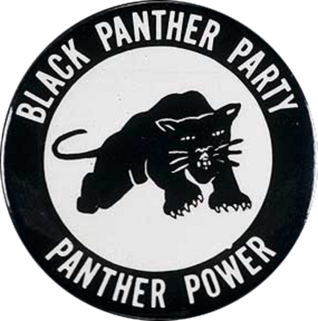
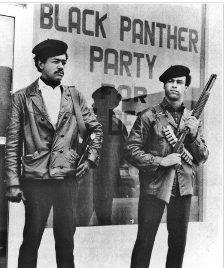

October 15, 1966
The Oakland Chapter of the Black Panther Party
Within the Black community, Black people fell victim to disenfranchisement. In response, The Lowndes County Freedom Organization, also known as The Black Panther Party of Lowndes County Alabama, was established to bring Black people together to secure their basic rights. One of the biggest rights they fought for was the right to vote within the South. This led to the creation of the Black Panther Party for Self Defense also known as, for short, The Black Panther Party. The Chapter in Oakland, California was developed on October 15, 1966, by two men who were students at Merritt College together, Huey P. Newton and Bobby Seale.
The Panthers of the Oakland Chapter were meant to legally patrol the police and put them under surveillance. They did this by arming themselves with weapons and keeping their distance between themselves and the police. This resulted in fewer police brutality cases. In response, the FBI viewed the Party as their enemy and wanted them to shut down. As stated by Huey P. Newton, a black panther is an animal who will not attack. If attacked, the black panther backs up until he has no more room to back. Then, the black panther will strike out at his assailant and wipe him out. This is why both parties in California and Alabama decided to take on a Black Panther as their symbol.
Together, Huey P. Newton and Bobby Seale created the Manifesto of the Black Panther Party, called the 10-point Program
- We want the freedom. We want the power to determine the destiny of our black community.
- We want full employment for our people.
- We want an end to the robbery by the capitalists of our black community.
- We want decent housing, fit for the shelter of human beings.
- We want education for our people that exposes the true nature of this decadent American society.
- We want all black men to be exempt from military service.
- We want an immediate end to police brutality and the murder of black people.
- We want freedom for all black men held in federal, state, county, and city prisons and jails.
- We want all black people when brought to trial to be tried in court by a jury of their peer group or people from the black communities.
- We want land, bread, housing, education, clothing, justice, and peace.
These 10 points were created to develop the goals and path of the Black Panther Party for Self-Defense. Each member of the Party was expected to live by these points and practice them every day.